天文 |
气象 |
板路 |
折腾 |
老本行 |
本站 |
|
发信人：站长, 信区：气象→分析展望
标 题：2013年8月29日晚太原彩云现象分析
发信站：板路 (2015年02月18日15时,星期三), 本站
本文于2013年09月05日首发于果壳网。
版权声明：本帖中所有照片版权归原作者所有，转载请根据本文提
供的信息，注明作者。
参与分析：马一川(从网)、站长、高博(从网)、艾泽宇(从网)、
王富强(从网)、倪泽��(从网)、@张超、曹小喵(星缘)、
steed(星缘)、詹想(星缘)、八爪鱼(星缘)、Crb(星缘)、
mickey(星缘)――按参与分析的时间先后顺序
从网：人人网网友
星缘：星缘山风队队员
29日晚上，从网网友“艾泽宇”先生在“省政协”附近（其实
我不知道是哪），冲西北方天空，拍到一片漂亮的网状星云，这一
定是哪个倒霉的大质量恒星在哪辈子的时候开花了吧，其丝缕状的
结构和绚丽的颜色，真是让我陶醉……
哎，星云下面，还有地景，这真是一副好照片啊…啊…啊？！
地景？！！这么大尺度的星云照片里怎么有这么大范围的地景？！0_0
好吧....被冷水浇头后，定神一看，原来是一片漂亮的彩云……
嘛，那也很漂亮啊……
啥？？？彩云？天空这么黑暗，应该是晚上吧？那么云彩是因
为谁而五光十色呢？反射地面灯光么？不对，云朵不是镜子，要能
这么鲜明地反射，那一定是闹鬼了.....
根据近年来神棍和某（wéi）科学的爱好者的习性，来个彩云
都会被当成某地质灾害的“证据”吧...so，先于它们，仔细分析
一下这条纱巾究竟出自何厂~
根据艾先生的注释，照片拍摄于20时05分。那么用电子星图软
件Stellarium看看当时的太阳情况吧~
地平高度角-12度多一点儿，那就是刚刚过航海昏影终、刚刚进
天文昏影的阶段吧。这时地影刚刚升起来，地面虽暗，高空却是有阳
光照射的，如果有人造卫星从头上经过，我们就能看见它。
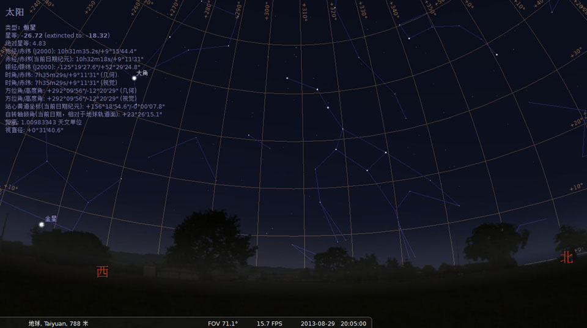
忽然想到，云彩出现在晚上8点，这时正好是气象站放探空气球
的时间呀！查一下探空数据，不就知道什么高度可以形成云朵了吗？
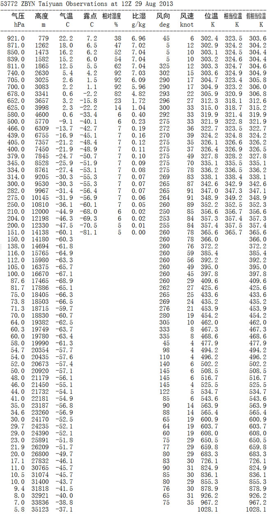
看起来，只有在740-700hPa（百帕）的层面上有充分的成云条
件：气温露点接近、相对湿度很大。那么应该是3km高度上的中云
族吧，分析到此就该结束了。
不对！云团的这个形态跟中云族里的哪一属哪一种云都对不上
啊！牵强地说，就是絮状高积云有点像，那也没有成云条件啊！
絮状高积云的出现预示着大气层结不稳定，有强对流发生的可
能，而当时华北大地受高空槽后强冷平流控制，太原上空没法形成
这种云吧。
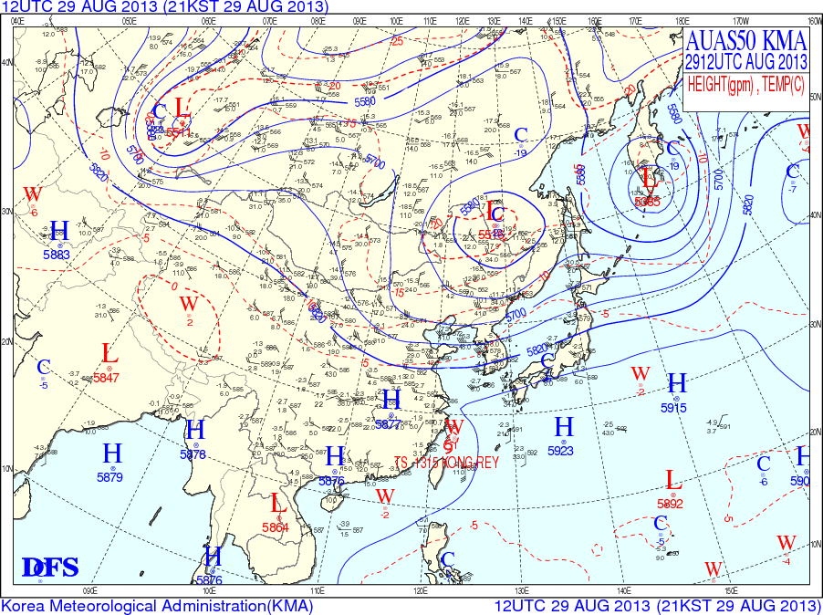
况且..这个形态长得..像是高云族、冰晶云的样子哎...700百
帕气温还是正的！用探空分析不靠谱....一定还有别的方法知道其
真实高度！比如用激光测云仪？没这货，没戏……
云彩能折射阳光，说明一定会被太阳照到，那么既然知道拍摄
地是太原、拍摄时间20点06分（照片exif是这么说的），那么就能
算出来太阳仰角是-12°31'51"，通过以下关系可知道云彩被照亮的
最低高度。（曹小喵绘图）
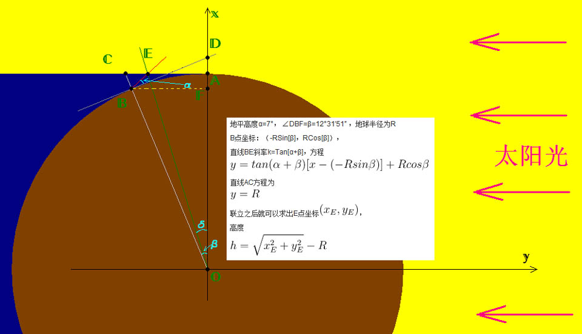
于是乎，可以知道阳光与地平线的最近交点是38km处，阳光与
天顶的最低交点在155km处。于是也就知道了地影的范围，在地影
里的云是肯定不会被阳光照到的，比如照片中的低空云。
so..彩云的真实高度在38km以上，那起码是3-4百帕的层面啊，
形成冰晶云的温度条件达到。
接下来，只要知道彩云的地平高度就能根据上述关系算出它的
真实高度下限了。首选方法是在照片上寻找恒星等天体，再根据电
子星图给出的数据就行了。（可参考《2013年08月13日华北火流星
轨迹分析》中对流星地平高度的确定）
不过杯具的是，当时天光未熄，要获得曝光度合适的照片就要
用短快门时间拍摄，以至于背景天体不明显，即使对照片进行暴力
处理，也不能认出确信是天体的亮点。
开始我们认为照片左侧中部的紫色小点有可能是金星，但后来
也排除了。分析陷入僵局（其实是大半夜的大家都困了 摊手）。
我们猜想，既然是高空发生的现象，可见范围一定很大，且当
时也不是休息的时候，估计会有其他人拍照并发到网上吧，于是在
微博、百度上搜索，还真在中关村在线找到一组！
山西网友“望天0”在29日午夜发表了《七彩云》一帖，内有
三张彩云照片。其中于2013-08-29 19:57:22.49拍摄的照片：
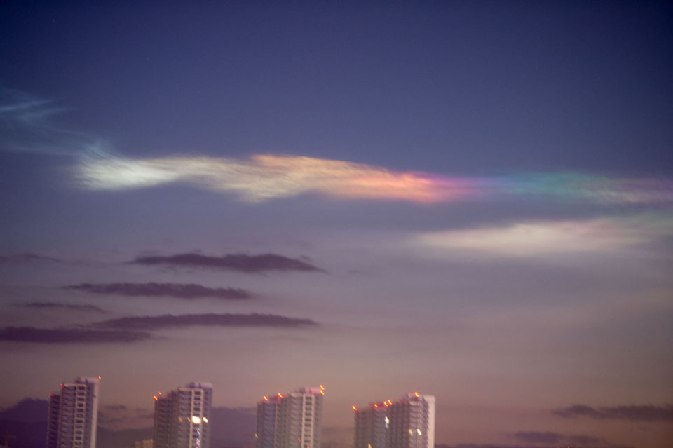
这张照片曝光0.5秒，查看大图，能看出有一些白色线条，各
线条长度、角度相同，且与软件模拟的角度一致，因此我们认为线
条是恒星因周日视运动而拉线。虽然楼房的灯光也有拉线，我们认
为这是在拍摄后期的相机晃动所致，且灯拉线的角度与星拉线的角
度不一样，认为白色线条是恒星的可信度高。（这里选取原片一部
分区域的白线条作为展示）
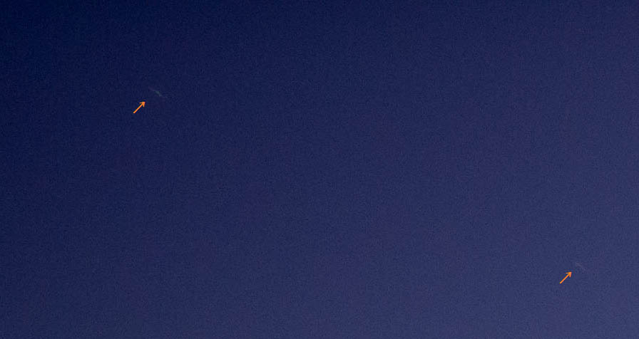
借助透视效应，用艾先生拍摄的照片推出了照片中地平线的位
置。左侧交点是正西点(270度)，右侧交点是正北点(360、0度)。
照片最左边缘的方位角大于270度，拍摄方向为西偏西北，大致符合
拍摄者描述。
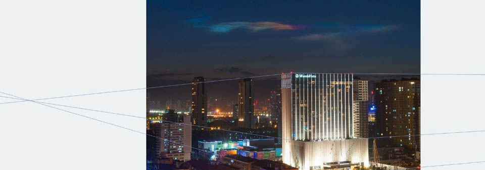
根据上图分析，得下图，图上方的数字就是方位角，以正北为
0度，向东度量。
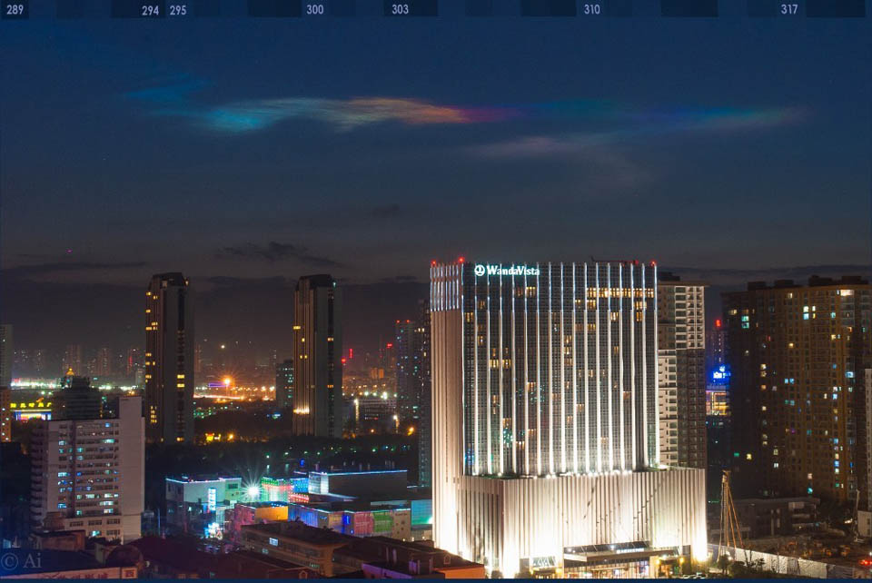
我们认为，“望天0”网友和艾先生拍到的彩云形态、彩云色彩
分布几乎一致，说明他们相隔不远，都是在太原市，那么可以使用
“望天0”拍摄的照片上的恒星来判断云彩的高度，那么首先要确定
那些恒星是什么。Crb首先证认出此图上的四个亮点（打上标记，表
示位置），从上到下分别是狮子93号星、狮子92号星、狮子72号星、
狮子δ星。

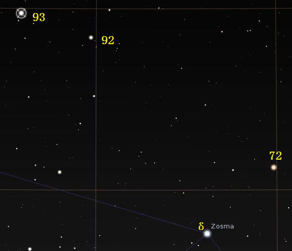
以上两图的星点可以很好地按比例叠合：
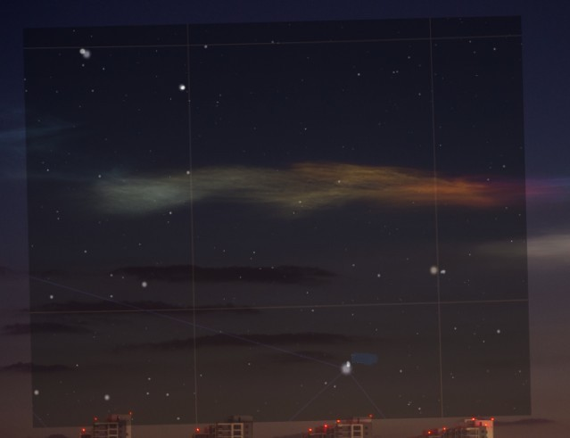
这样我们就知道了彩云主体上边缘的地平高度为+7度，
再按光照关系，算得真实高度是71km。
那么，它究竟是什么东西呢？首先我们想到的是夜光云。
它位于远高于平流层的76千米至85千米，这里是大气的中间
层，是目前发现的最高的云。
但此次彩云现象与夜光云又有诸多不同，夜光云发生在
高纬度地区，而太原纬度是37.87N，属于中纬度，离高纬度
远得很呢！看外观，夜光云形如卷云，轻盈而洁白，或略带
蓝色，此彩云形如大块卷积云，色泽艳丽，怎么看都不觉得
它们是一种。
下图即“夜光云”，来自维基百科：
在大气层高处，还有一种漂亮的云――珠母云。它拥有的彩色
比夜光云多一些，但仍与此彩云有很大区别，且珠母云也发生在高
纬度地区。下图即珠母云，百度搜来的。
有网友认为此彩云实际不是云，而是极光。但外形上看，实在
不觉得此彩云有极光的形态，而且在北京要想看到极光，全球地磁
活动水平值必须到9以上，在29日的水平是1所以29日在比北京更靠
南的太原根本不可能发生极光。下图来自...自己看图片右下角...
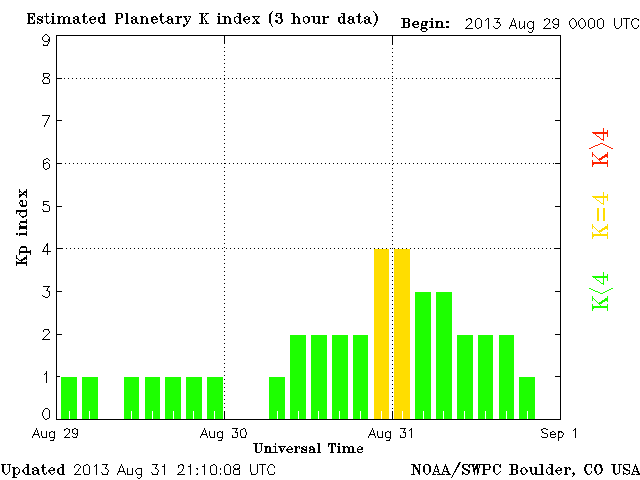
不是夜光云！不是珠母云！不是极光！。。。那还能是啥啊摔！
等等！好像忘记了一点重要的事情！太原附近不是有卫星发射场么！
那么有可能是发射了什么东西，燃料燃烧后的气体在寒冷环境下凝
结，产生云雾？而且彩云的形态跟火箭尾气云雾的确很像！查找新
闻，没有发射新闻，连即将发射的风云三号卫星在30日还在测试……
那么，谁也不知道这片彩云是个啥了。。。
结论：彩云位于距离地面至少71km高的大气层中间层，排除夜
光云、珠母云和极光的可能，推测有未经报道的航天发射活动产生
的气体冷凝成云，折射阳光，形成彩云。
完
啊还没完....
需要说明的是，曹小喵、八爪鱼、Crb、mickey 的分析占了本
文的很大一部分，尤其是中间两位做了大量计算和绘图，第四位还
向艾先生取得照片原片和拍摄地经纬度（因涉及拍摄者的隐私，恕
不告知），使得分析更加准确。要不是他们费心费力地细心分析，
我还真把这货当成700百帕上的冰晶云了.....咳咳，还是严谨点好
啊。以及我基本上是啥也没干，一直在没节操地让他们算这个算那
个……（ /_\ ）
悬而未决的三个问题：
1、此次现象中，紫色和红色的部分为何接驳得如此均匀？
猜想：两片不同色彩的云在同一视线方向上叠合？光线的多次折射
所致？
2、夜光云为啥没有绚丽的颜色？
猜想：夜光云的高度比本次现象的云还要高，其折射产生的彩光落
区不在地球上？反正我见过的夜光云照片全是白色的。
而mickey于2012年9月27日19:10在清华大学拍的照片，当时太
阳高度同样是-12度，上面的白色的是(疑似)夜光云，下面有虹彩现
象，不知道跟夜光云有没有关系。如果有关系，是不是说掌握好角
度，也能看到彩色的夜光云呢？
3、为何在红外云图上看不到其踪迹？
猜想：本体很薄很小？云图分辨率不够？
4、太阳的方位角和彩云最清晰的部位的方位角差了约10度，那么
71km与云彩的真实高度下限还是有误差的，如何修正？
猜想：想不出来...
5、我不识数……
艾玛没了
真没了